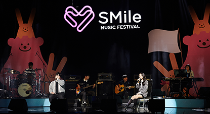

*안녕 여러분!
Halo *yeoreobun! Selamat datang di Website pinkbloodwithhanzs!
SM Smile for U merupakan Kampanye yang bertujuan untuk mendukung anak-anak di wilayah Asia untuk menerima pendidikan musik. 'SMile for U' berarti SM 'SMILE' dan UNICEF 'U' bersama. Adapan SM Smile memiliki logo yang berbentuk hati untuk melambangkan visi SM dalam kegiatan kontribusi sosial, yaitu menyatukan cinta dan senyuman.
SM SMile, impian SM Entertainment adalah membangun masa depan di mana semua bisa tersenyum bersama melalui budaya. Bersama-sama, melaui program ini semua orang bisa membangun masa depan yang menakjubkan dimana bisa bermimpi dan tersenyum sebebas yang kita mau.
Menjamin pendidikan inklusif dan berkualitas untuk semua dan mendorong pembelajaran sepanjang hayat. Memperoleh pendidikan yang berkualitas merupakan fondasi untuk meningkatkan kehidupan masyarakat dan pembangunan berkelanjutan. Kemajuan besar telah dicapai dalam meningkatkan akses terhadap pendidikan di semua tingkatan dan meningkatkan angka partisipasi sekolah khususnya bagi perempuan dan anak perempuan. Keterampilan literasi dasar telah meningkat pesat, namun diperlukan upaya yang lebih berani untuk mengambil langkah yang lebih besar dalam mencapai tujuan pendidikan universal. Misalnya, dunia telah mencapai kesetaraan dalam pendidikan dasar antara anak perempuan dan laki-laki, namun hanya sedikit negara yang mencapai target tersebut di semua tingkat pendidikan. Untuk memastikan pendidikan inklusif dan berkualitas sebagaimana tercantum dalam SDGs 4 PBB, SMile telah melaksanakan berbagai kegiatan kontribusi sosial terutama di Korea dan Asia untuk membantu anak-anak dan remaja --pemimpin masa depan kita-- mengembangkan impian dan harapan mereka melalui pendidikan musik.
| Pendidikan dan Kebudayaan
SM Entertainment mendukung anak-anak dan remaja dalam dan luar negeri yang memimpikan masa depan melalui musik dengan keahlian dan infrastrukturnya. adapun programnya yaitu, SMile for U dan SMile Music Festival. |
Komunitas Lokal
SM Entertainment melakukan kegiatan sukarela untuk komunitas lokal dengan partisipasi sukarela dari para anggotanya. adapun salah satu programnya yaitu SMile Social Service Group |
||
| Kepentingan Umum & Lingkungan
SM Entertainment bekerja sama dengan LSM, organisasi, dan perusahaan dalam dan luar negeri untuk menyelesaikan masalah masyarakat. Adapun program-programnya yaitu, Artists' public interest activities, Support for Children and adolescents in blind spots dan Environmental protection campaigns |
Donasi dan Sponsor
SM Entertainment dan para artisnya melakukan kegiatan donasi dan sponsorship untuk orang-orang dan tempat-tempat yang membutuhkan. |
| Keterangan | Tanggal | Lokasi |
| 1st | Rabu 11 November 2015 pukul 19.00 | SMTOWN@coexartium 5F SMTOWN THEATER |
| 2nd | Jumat 25 November 2016 pukul 19.00 | SMTOWN@coexartium 5F SMTOWN THEATER |
| 3th | Jumat 24 November 2017 pukul 19.00 | SMTOWN@coexartium 5F SMTOWN THEATER |
| 4th | Jumat 23 November 2018 pukul 19.00 | SMTOWN@coexartium 5F SMTOWN THEATER |
| 5th | Jumat 25 Oktober 2019 pukul 19.00 | SMTOWN@coexartium 5F SMTOWN THEATER |
| 6th | 30.07.2020~13.03.2021 | Kelas Online / Ambil profil |
| 7th | Sabtu 25 Desember 2021 pukul 16.00 | SMTOWN 7F |
| 8th | siren, memories, get a guitar | Sabtu 19 November 2022 pukul 17.00 |

Pada bulan November 2015, kami menandatangani perjanjian kontribusi sosial dengan Komite Korea untuk Unicef dan meluncurkan Kampanye SMile for U. Kampanye Smile for U mendukung pendidikan musik untuk anak-anak Asia, dengan Vietnam dan Filipina sebagai negara sasarannya.
SMile Social Service Group terdiri dari karyawan dan artis dari seluruh afiliasi SM Entertainment. Para anggotanya yang menganggap kerja sukarela bermakna telah berkumpul secara sukarela untuk berlatih berbagi. Didirikan pada tahun 2014, kelompok ini terus melakukan kegiatan kontribusi sosial, mengunjungi, dan memberikan bantuan kepada mereka yang membutuhkan. Adapun kegiatannya berupa Kelompok Relawan (Fotografi, Pembuatan Kue, Perlindungan Anjing dan Berkebun), Pendampingan Kerja, Mendukung masyarakat kurang mampu, Kegiatan perlindungan lingkungan, Hands-on, dll.